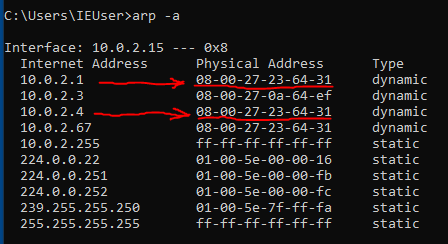

Arp Spoof(Arp Poisoning)
Arp spoof (kandırma) veya diğer adıyla arp poisoning (zehirleme) hedef cihaza kendi cihazımızı router gibi göstermek için kullanılır. Bunu yapmak için MAC adresi kullanılır. Saldırı üç aşamadan oluşur;
1- Öncelikle ip_forwarding yapmamız lazım ki saldırı başladığında hedef cihazın interneti kesilmesin.
bu şekilde ip_forward 1 durumuna getirip tamamlamış olduk.
2- Aynı ağda bulunduğumuz router'a hedef cihazın MAC adresini vererek kendimizi hedef cihaz gibi tanıtırız,
bir tane terminal açıp arpspoof komutunu bu şekilde ayarlıyoruz saldırıyı başlatmadan önce ikinci bir terminal açıp hedef ve gateway (router,modem vb) IP adreslerini tam tersi şekilde yazacağız.
3- Aynı ağda bulunduğumuz hedef(kurban) cihaza ise kendimizi router gibi tanıtırız
ikinci açtığımız terminalde gördüğünüz gibi IP adreslerinin yerlerini değiştirdik çünkü birinci pencerede hedef IP adresine modem gibi kendimizi tanıtırken, ikinci pencerede modeme kendimizi hedef cihaz gibi tanıtmalıyız ki modem ile hedef cihazın arasına girebilelim. Artık iki terminal penceresinde de saldırıyı başlatabiliriz.
Böylelikle biz araya girerek ortada kalıp iki tarafı da kandırmış oluruz. Bu atak türüne man in the middle (MITM) denir.
Saldırı öncesi hedef makinede ki MAC adresleri
Buda saldırı sırasında ki MAC adresleri
işaretlenen MAC adreslerinin aynı olduğuna dikkat edin. 10.0.2.1 modemin IP adresi, 10.0.2.4 ise bizim kendi IP adresimiz. Bu iki cihazında MAC adreslerini aynı olarak bu hedef makineye gösterebildiğimize göre atak başarılı olmuş demektir. Artık modem ile bu cihazın arasında girmiş olduk yani ortada ki adam (man in the middle) saldırısı arp poisoning veya diğer adıyla arp spoofing yöntemiyle başarılı oldu.
arp koruması varsa - tek yönlü arp
eğer modemde arp koruması varsa o zaman aynı mac adresine sahip ikinci cihazın bağlanmasına modem izin vermez. Bu durumda tek yönlü arp saldırısı yapılır. Tek yönlü saldırı şu demektir; biz hedef cihaza gidip “ben modemim” diye kendimizi tanıtıyoruz fakat man in the middle atak da olduğu gibi gidip bir de modeme ben “hedef cihazım” demiyoruz ki modem durumu anlamasın. Bu şekilde tek yönlü atak yaparak başarılı oluruz.